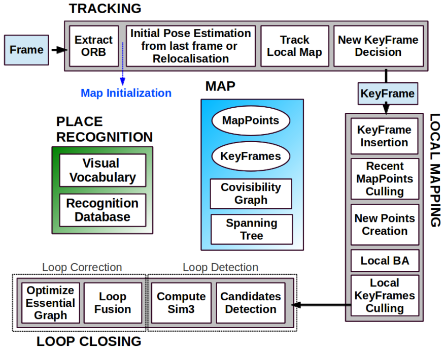
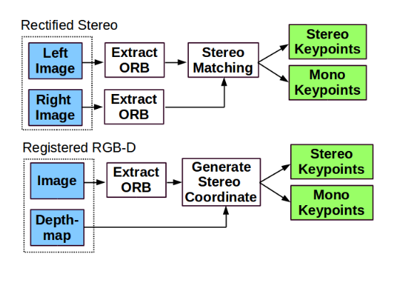
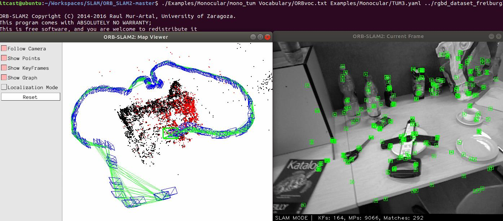

ORB_SLAM2入门¶
ORB-SLAM是西班牙 Zaragoza 大学的 Raúl Mur-Arta 编写的视觉 SLAM 系统。由Raul Mur-Artal，J. M. M. Montiel和Juan D. Tardos于2015年发表在IEEE Transactions on Robotics。项目地址为：https://github.com/raulmur/ORB_SLAM2。该系统包含了SLAM系统的共有模块：跟踪（Tracking）、建图（Mapping）、重定位（Relocalization）、闭环检测（Loop closing）。
ORB-SLAM2是用于单目，双目和RGB-D相机的实时SLAM库，可计算相机轨迹和稀疏3D重建（在具有真实比例的双目数据和RGB-D情况下）。 它能够实时检测环路并重新定位摄像机。 其提供了在真实道路的 KITTI数据集 以进行双目或单目的SLAM，提供了室内的 TUM数据集 以进行RGB-D或单目SLAM，提供了四轴飞行器采集的 EuRoC数据集 以方便双目或单目运行SLAM系统。 还提供了一个ROS节点来处理实时单目、双目或RGB-D流。 该库可以在没有ROS的情况下进行编译。 ORB-SLAM2提供了一个可在SLAM模式和Localization模式之间切换的GUI。
其包含的模块总结为：
- 跟踪（Tracking）
- 建图（Mapping）
- 重定位（Relocalization）
- 闭环检测（Loop closing）

ORB-SLAM主要分为三个线程进行:
1、跟踪（Tracking）
通过图像提取其ORB特征点及描述子，进行全局重定位位姿估计，或根据之前帧的特征进行位姿估计。然后根据重建的局部地图优化位姿。
2、局部建图（LocalMapping）
选择合适的关键帧并将刚刚地图点（MapPoints）进行筛选，生成新的地图点，进行局部集束调整 Local BA（Bundle Adjustment），最后筛选掉多余的关键帧。
3、闭环检测（LoopClosing）
分为闭环探测和闭环校正。
环境准备¶
项目地址：https://github.com/raulmur/ORB_SLAM2
安装Pangolin¶
安装依赖：
Pangolin封装了OpenGL的输入&输入，是一个可以用于3D视觉和导航的轻量级操作库。
先安装boost编译依赖环境：
sudo apt-get install libglew-dev
sudo apt-get install libboost-dev libboost-thread-dev libboost-filesystem-dev
然后clone源码并编译，如果clone比较慢，可以直接使用此链接下载压缩包：下载链接
git clone https://github.com/stevenlovegrove/Pangolin.git
cd Pangolin
mkdir build
cd build
cmake -DCPP11_NO_BOOST=1 ..
# 执行编译，这里的参数根据cpu核心数来，8核的就是-j8
make -j4
# 编译完之后，执行安装
sudo make install
安装Eigen¶
sudo apt-get install libeigen3-dev
引用Eigen库只需要添加其头文件即可（不需要链接库文件），即在 CMakeLists.txt 文件中只要包含如下内容即可（当前开源项目已添加，不需要重复添加）：
include_directories("/usr/include/eigen3")
如果不能确定eigen3的实际安装位置，可以通过以下命令进行定位：
sudo updatedb
locate eigen3
安装OpenCV¶
ROS版已集成
对于Ubuntu18.04的ROS环境melodic中，已经默认集成了OpenCV-3.2.0，ORB_SLAM2需要的OpenCV版本>2.4.3即可，此时可以不用再独立安装OpenCV了
独立运行环境
如果不想依赖ROS环境，可以独立编译安装OpenCV，首先下载相关的源码：
虽然OpenCV官方源码在github上，但是我们建议在gitee上下载OpenCV-3.4.9的源码，速度快：https://gitee.com/mirrors/opencv/repository/archive/3.4.9
同时下载OpenCV的扩展模块opencv_contrib包：https://gitee.com/mirrors/opencv_contrib/repository/archive/3.4.9
下载完成后，这里给出OpenCV-3.4.9的环境编译及安装的文档链接。
下载编译ORB_SLAM2¶
git clone https://github.com/raulmur/ORB_SLAM2.git ORB_SLAM2
cd ORB_SLAM2
chmod +x build.sh
./build.sh
！！！注意：
由于作者未考虑Ubuntu18.04的兼容问题，因而需要手动在以下文件添加一个include头：
include/System.h 中添加：#include <unistd.h>
添加完成之后再重新执行编译脚本即可
如果正常编译完成，则lib目录下会生成libORB_SLAM2.so库，Examples目录下会生成对应的可执行程序 mono_tum, mono_kitti, mono_euroc, stereo_kitti, stereo_euroc, rgbd_tum。
双目相机和深度图相机的图像预处理：

编译配置¶
可以在执行cmake和make编译命令之前，在根目录的 CMakeLists.txt 文件中（12行）添加以下两行配置，来屏蔽大量的代码过时警告（对编译结果没有影响），方便编译出错时候排查问题。
set(CMAKE_CXX_FLAGS "${CMAKE_CXX_FLAGS} -Wno-deprecated-declarations")
set(CMAKE_CXX_FLAGS "${CMAKE_CXX_FLAGS} -Wno-deprecated")
运行测试程序¶
单目Monocular测试案例¶
网站https://vision.in.tum.de/data/datasets/rgbd-dataset/download提供了很多已经提前录制好的数据集可以拿来测试使用。
这里我们以室内TUM 数据集为例，，推荐下载如下室内数据：fr3/long_office_household，该数据的相关介绍，我们将之下载解压到ORB_SLAM2源码的同级目录。
执行以下命令即可看到效果（前提是你已经根据上边的教程编译过ORB_SLAM2的源码）
./Examples/Monocular/mono_tum Vocabulary/ORBvoc.txt Examples/Monocular/TUM3.yaml ../rgbd_dataset_freiburg3_long_office_household
运行正常的话，会输出如下两个动态的场景：

双目Stereo测试案例¶
这里我们以无人飞行器EuRoC数据集为例，下载页面为：http://projects.asl.ethz.ch/datasets/doku.php?id=kmavvisualinertialdatasets，选择 Machine Hall 01 对应的 ASL Dataset Format 格式数据集：http://robotics.ethz.ch/~asl-datasets/ijrr_euroc_mav_dataset/machine_hall/MH_01_easy/MH_01_easy.zip。
执行如下命令查看案例：
./Examples/Stereo/stereo_euroc Vocabulary/ORBvoc.txt Examples/Stereo/EuRoC.yaml ../mav0/cam0/data ../mav0/cam1/data Examples/Stereo/EuRoC_TimeStamps/MH01.txt
深度RGB-D测试案例¶
- 仍然需要从这个网站下载数据资源并解压，我们使用和单目相同的资源 fr3/long_office_household （包含深度数据）
-
我们需要通过 http://vision.in.tum.de/data/datasets/rgbd-dataset/tools 中的 associate.py 来对彩色RGB图片和深度depth图进行关联。
Examples/RGB-D/associations/目录中已经提供了一些已经关联好的数据数列。你可以通过以下命令生成自己的数据序列：python associate.py PATH_TO_SEQUENCE/rgb.txt PATH_TO_SEQUENCE/depth.txt > associations.txt以Kinect为例，其原理是以非同步的方式提供颜色和深度图像。这意味着彩色图像的时间戳与深度图像的时间戳不会相交。因此，需要找到一种将彩色图像与深度图像相关联的方法。
为了这个目的，我们使用
associate.py进行关联，其原理是读取rgb.txt和depth.txt的时间戳信息，然后把最接近的匹配到一起。 -
执行以下命令，根据数据序列的名称，设置对应的相机配置文件，freiburg1，freiburg2，freiburg3分别对应TUM1.yaml，TUM2.yaml，TUM3.yaml。
./Examples/RGB-D/rgbd_tum Vocabulary/ORBvoc.txt Examples/RGB-D/TUM3.yaml ../rgbd_dataset_freiburg3_long_office_household ../associations.txt
这里一定一定要注意确保命令中的每一个参数所应的文件或目录，相对于当前路径都是正确且存在的！否则一定无法正常显示。